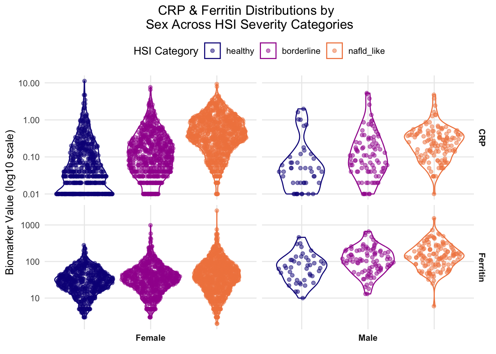

The R portion of Part 2 functions as a diagnostic and interpretive layer on top of the machine learning pipeline established in section 2.2, which focused on classification modeling and validation metrics.
2.3.1.1: Purpose
This section uses R to examine the structural and distributional features of the dataset that shaped the ML portion results. R was selected for this portion because it is often used by computational biologists for cohort stratification and distributional trend analysis, which aligns with the core analytic approach for this stage of the project.
Specifically, this section addresses three questions that were left open or only partially resolved by the ML Python analysis:
How is missingness structured in the biomarker subset, and how well does that subset demographically represent the full cohort?
What does biomarker distribution look like across HSI severity categories, and do those distributions contribute to an explanation for the counter-intuitive logistic regression coefficients observed in section 2.2.4.3?
What are the structural implications of the sex imbalance identified in the biomarker subset of section 2.2.4.4 for downstream interpretation?
These diagnostic questions are designed to complement the modeling work in section 2.2, rather than replicate it, so there is no models refitting present in the R analysis. Rather, the intent of this portion is to investigate the dataset characteristics that contextualize Part 2’s findings, especially those that remain unclear, to improve the weight and clarity of the coding contribution in the part 1/part 2 integration discussion.
2.3.1.2: Load Packages & Data
Packages are loaded using “pacman::p_load” to streamline installation.
The dataset that is read in below is the final analysis-ready NHANES file that was constructed via the PostgreSQL pipeline described in section 2.1 and used for the Python analysis in section 2.2.
Full scripts for file construction pipeline can be found on the GitHub project repository (link: https://github.com/colette-osiris/mthfr-fld-capstone).
Show code
##| output: false# LOAD PACKAGES - -------------if (!require(pacman)) install.packages("pacman")pacman::p_load(tidyverse, stringr, ggridges, #potential use for future data analysis janitor, #new feature viridis, patchwork, scales, here, grid, flextable, update =FALSE)
Show code
##| output: false# read in final analysis-ready NHANES file from PostgreSQL pipeline (sect. 2.1)NHANES.dataset.01<- readr::read_csv(here::here("data","clean_data","nhanes_final.csv"),name_repair ="universal")##explore data #glimpse(NHANES.dataset.01)#names(NHANES.dataset.01)cat("Loaded: ", nrow(NHANES.dataset.01), "rows and", ncol(NHANES.dataset.01), "columns.")
Loaded: 14435 rows and 23 columns.
2.3.1.3: Label Reconstruction
HSI and its derived labels (NAFLD, HSI_category) are re-constructed here rather than imported from the Python analysis for reproducibility purposes. This way, any reader running this file in isolation arrives at the same labels that were used in section 2.2 independently.
# DERIVE HSI COMPONENTS & LABELS - -------------##using same formulas as 2.2.3.4 in ML doc#adapt from project code - look at PLSC426 content for exact formatting NHANES.dataset.01<- NHANES.dataset.01%>% dplyr::mutate(#sex indicator: 1 = female, 0 = malefemale = dplyr::case_when( sex ==2~1L, TRUE~0L),#diabetes indicator: 1 = yes, 0 = no#need to collapse all other options (7/9/etc)diabetic = dplyr::case_when( diabetes ==1~1L, TRUE~0L),#ALT/AST ratio (used in HSI)alt_ast_ratio = alt / ast,#HSI formula: 8*(ALT/AST) + BMI + 2*(if diabetic) + 2*(if female)HSI =8* alt_ast_ratio + bmi + (2* diabetic) + (2* female),#binary NAFLD label: 1 = NAFLD (HSI >= 36), 0 = healthyNAFLD =as.integer(HSI >=36),#same three-level severity category - use later for distributional analysisHSI_category = dplyr::case_when(#need to address NA so they dont get misclassified is.na(HSI) ~NA_character_, HSI <30~"healthy", HSI <36~"borderline", HSI >=36~"nafld_like"), #don't forget TRUE catch-all#set ordered factor so healthy -> borderline -> nafld_like reads left-to-rightHSI_category = forcats::fct_relevel(HSI_category,"healthy", "borderline", "nafld_like"))#view it NHANES.dataset.01
Because of the reproducibility practices used, the following chunk checks the data distribution in order to ensure R-derived labels stay consistent throughout the analysis.
Show code
#confirm category counts match Python-derived labels from §2hsi_category_flextable <- NHANES.dataset.01%>% dplyr::count(HSI_category, name ="count") %>%#use flextable formatting from class flextable::flextable() %>% flextable::theme_booktabs(bold_header =TRUE) %>% flextable::align(align ="center", part ="all") %>% flextable::valign(valign ="bottom", part ="header") %>% flextable::padding(padding =1, part ="all") %>% flextable::autofit()#view it hsi_category_flextable
HSI_category
count
healthy
3,416
borderline
4,022
nafld_like
5,551
1,446
The category counts (healthy = 3,416, borderline = 4,022, nafld_like = 5,551) match those found in the ML analysis, which confirms the R derivation reproduces the Python labels correctly. This integrity check was initially included in the portion of the project to act as a routine reproducibility verification measure. However, during preliminary runs, it revealed a discrepancy in the ML code that silently misclassified 1,446 rows with missing HSI inputs. This error was traced to the Python code’s default NaN behavior in section 2.2.3.4 and was resolved, along with all downstream implications of the initial bug. With labels reconstructed and validated, the analysis proceeds to the diagnostic examinations outlined below.
2.3.2: Missingness & Subset Representativeness
2.3.2.1: Biomarker Missingness by Cohort
Biomarker subset structures are first explored by examining missingness across both NHANES cohorts. This was chosen as the first step since missingness directly shapes what observations the model can use and therefore could distort both the subset used in downstream analysis and any accompanying interpretation.
Show code
# BIOMARKER MISSINGNESS HEATMAP - -------------#tile heatmap of biomarker coverage % per cohort full_missingness_data <- NHANES.dataset.01%>% dplyr::select(cohort, alt, ast, diabetes, bmi, sex, homocysteine, serum_folate, rbc_folate, crp, mm_acid, ggt, vit_b12, ferritin) %>%#pivot longer so biomarkers become a variable tidyr::pivot_longer(cols =-cohort, names_to ="biomarker",values_to ="value") %>%#compute coverage per biomarker per cohort dplyr::summarise(coverage_pct =sum(!is.na(value)) / dplyr::n() *100,.by =c(cohort, biomarker)) %>% dplyr::mutate(#rename biomarkers for cleaner display biomarker = dplyr::recode( biomarker,"homocysteine"="Homocysteine","serum_folate"="Serum Folate","rbc_folate"="RBC Folate","crp"="CRP","mm_acid"="MMA","ggt"="GGT","vit_b12"="Vitamin B12","ferritin"="Ferritin","alt"="ALT","ast"="AST","bmi"="BMI","sex"="Sex","diabetes"="Diabetes"),#order biomarkers by lowest avg coverage biomarker = forcats::fct_reorder(biomarker, coverage_pct, .fun = mean),#clean cohort labels cohort = dplyr::case_when( cohort =="c1_2001_2002"~"2001-2002", cohort =="c2_2003_2004"~"2003-2004"))#plot full_missingness_plot <- full_missingness_data %>%ggplot(aes(x = cohort, y = biomarker, fill = coverage_pct)) +geom_tile(color ="white") +#add % labels in cells - had to look up correct geom for annotations like thisgeom_text(aes(label =paste0(round(coverage_pct, 1), "%")),color ="white", #changed - black looked odd fontface ="bold",size =4) +#color theme is same as R project but continous scale_fill_viridis_c(option ="plasma",begin =0, end =0.7, #avoid blinding yellow end name ="Coverage (%)") +labs(x ="Cohort", #changed label from biomarker to featurey ="Feature",title ="Feature Coverage by NHANES Cohort \n (% of Participants with Non-Missing Values)") +theme_minimal() +#title/legend position wrangling theme(plot.title.position ="plot",plot.title =element_text(hjust =0.5),panel.grid =element_blank())#save plot - ggplot not flextable syntax #ggsave(#filename = here::here("plots", "part2", "biomarker_missingness_tile.png"),#plot = missingness_plot,#dpi = 400,#width = 10,#height = 7,#units = "in",#bg = "white") #was saving grey - this fixed it#view it full_missingness_plot
The most notable feature of the figure is the sharp coverage collapse of six biomarkers in cohort 1. This is a significant cohort imbalance, though it’s notable that uniform distribution of affected variables across this skew stays relatively stable (7.3-7.4%). This pattern more likely reflects a source-level NHANES data artifact rather than a pipeline error, given that the ~7% coverage matches the documented biomarker subset size from preprocessing in section 2.1.5.
Additionally, it is worth noting that the only two biomarkers unaffected by the coverage collapse are CRP and GGT, which each show coverage of ~93% across both cohorts. The data for those biomarkers did not come from the same source file as the affected biomarkers (L06_2_B.XPT), which accounts for the coverage discrepancy. Similarly, ferritin in cohort 2 appears to have a 31.3% coverage, which matches the preprocessing value in section 2.1.7. Like CRP and GGT in cohort 1, ferritin data for cohort 2 was stored in a separate document, further indicating that feature coverage is directly impacted by source filing mechanisms used by NHANES.
Overall, this missingness plot shows that cohort 1 has a severe biomarker gap from the L06 source file structure, while cohort 2 has more uniform coverage, with the exception of ferritin. This coverage structure directly shapes the biomarker subset that was used in downstream ML analysis since the model can only train on observations with non-missing values across all biomarkers. This restricts the analytical sample to 7.4% and 31.3% of initial participants of cohort 1 and 2, respectively, which explains why the biomarker model was trained on ~2,500 observations while the core model was trained on ~13,000 observations. This answers the first part of the question: ‘how is missingness structured in the biomarker subset, and how well does that subset demographically represent the full cohort?’, though further analysis is necessary to determine how well the subset represents the full cohort.
2.3.2.2: Demographic Comparison: Core vs Biomarker Subset
This section explores demographic comparisons between the two subsets, which is important to consider for generalizability of any interpretive conclusions. Section 2.2.4.4 established a strong sex skew within the biomarker model (89% female vs 51% in the full cohort) that functions as a key limitation and requires further investigation.
Show code
# DEMOGRAPHIC COMPARISON: CORE VS BIOMARKER SUBSET - -------------#want to compare sex and race/ethnicity across full core dataset and biomarker subset#to show how selection bias manifests in the complete-case subset #first need to set up both datasets #core dataset - same columns Python uses for core model (drop NAs in core vars)core_dataset <- NHANES.dataset.01%>% dplyr::filter(!is.na(alt), !is.na(ast), !is.na(bmi), !is.na(sex), !is.na(diabetes)) %>% dplyr::mutate(dataset ="Core Dataset")#biomarker subset - all 13 features (8 biomarkers + 5 core)biomarker_subset <- NHANES.dataset.01%>% dplyr::filter(!is.na(homocysteine), !is.na(serum_folate), !is.na(rbc_folate), !is.na(crp), !is.na(mm_acid), !is.na(ggt), !is.na(vit_b12), !is.na(ferritin), !is.na(alt), !is.na(ast), !is.na(bmi), !is.na(sex), !is.na(diabetes)) %>% dplyr::mutate(dataset ="Biomarker Subset")#print sample sizes for prose reference cat("Core dataset n:", nrow(core_dataset), "\n")
#stack them into one long df for plotting - look at data for actual labels useddemographic_comparison <- dplyr::bind_rows(core_dataset, biomarker_subset) %>% dplyr::mutate(#recoded sex for readability sex_label = dplyr::case_when( sex ==1~"Male", sex ==2~"Female"),#recode race/ethnicity using NHANES codes - need to look at data for actual used#labels found as follows: #1 = Mexican American, 2 = Other Hispanic, 3 = Non-Hispanic White,#4 = Non-Hispanic Black, 5 = Other/Multi race_label = dplyr::case_when( race_ethnicity ==1~"Mexican American", race_ethnicity ==2~"Other Hispanic", race_ethnicity ==3~"Non-Hispanic White", race_ethnicity ==4~"Non-Hispanic Black", race_ethnicity ==5~"Other/Multi"))#sex proportionality summary per dataset sex_summary <- demographic_comparison %>% dplyr::count(dataset, sex_label, name ="count") %>% dplyr::mutate(proportion = count /sum(count),.by = dataset)#race/ethnicity proportional summary per dataset race_summary <- demographic_comparison %>% dplyr::filter(!is.na(race_label)) %>%#need to drop any NA race rows dplyr::count(dataset, race_label, name ="count") %>% dplyr::mutate(proportion = count /sum(count),.by = dataset,#order race categories for consistent plotting race_label = forcats::fct_reorder(race_label, proportion, .desc =TRUE))
The figure below extends the model distribution comparison initiated in section 2.2.4.4 to include race/ethnicity demographics alongside sex distribution in a multiplot in order to visualize and characterize the full scope of detected selection bias.
Show code
#multiplot - want to keep original plots independent from multi-plot formatting#so I can use them in powerpoint #step 1: 2 panels/plots stacked vertically graph_stack <- ( (sex_comparison_plot +#remove double elements (titles, axes titles, etc) theme(plot.title =element_blank(),axis.title.y =element_blank(),axis.title.x =element_blank())) / (race_comparison_plot +theme(plot.title =element_blank(),axis.title.y =element_blank())))#step 2: compose final multiplot w/ shared legend and overall title demographic_multiplot <- graph_stack +plot_layout(guides ="collect",heights =c(1, 1)) +plot_annotation(title ="Demographic Composition: \n Core Dataset vs Biomarker Complete-Case Subset",subtitle ="Top: Sex | Bottom: Race/Ethnicity",theme =theme(plot.title =element_text(hjust =0.5),plot.subtitle =element_text(hjust =0.5))) &theme(legend.position ="bottom",legend.title =element_blank())#showdemographic_multiplot
This figure visually confirms the sex skew identified in section 2.2.4.4. It also indicates that among the populations represented in the initial cohorts, the biomarker subset retains roughly proportional representation for most populations. The only groups that appear to deviate from proper representation are Non-Hispanic Black and White individuals, facing over- and under- representation, respectively, each at approximately 5%.
While this figure provided clarification on racial and sex-based distributions, it did not indicate any potential sources of the sex skew. Sex skew was not a direct consequence of the source filing mechanisms unveiled in section 2.3.2.1, but beyond that exclusion, the source of the skew is unknown. Further investigation is encouraged, but could not be applied at this time due to project timeline constraints. Regardless of source, the established sex effect is large enough that the biomarker model’s interpretation of any sex-related feature is compromised, including the unexpected negative coefficient for female status that the logistic regression model supplied.
It is important to note that while this figure reflects the accurate preservation of racial/ethnic composition of the initial data, that does not mean that NHANES adequately captured sufficient and representative data of all major ethnic groups, as Asian, Middle Eastern/Arab, Oceanian/Pacific Islander, and Native populations are notably missing. As discussed in section 1.4.2, representation bias does limit the generalizability of the findings, and further investigation should include more representative sampling.
2.3.3: Biomarker Distributions Across HSI Categories
2.3.3.1: Distribution Panel
This section explores biomarker distributions across the three HSI categories to assess individual biomarkers for meaningful distribution separation that aligns with predictive signaling behavior observed in section 2.2.
Show code
# BIOMARKER DISTRIBUTIONS ACROSS HSI CATEGORIES - -------------##violin + sina plot panel of 8 novel biomarkers faceted across healthy/borderline/nafld_like#applied to biomarker subset so all rows have complete biomaarker data #first need to pivot biomarkers into long format for facetting #same reshape pattern as PLSC476 demographic_table #biomarker_long <- biomarker_subset %>% dplyr::filter(!is.na(HSI_category)) %>%#drop any HSI NA rows dplyr::select(HSI_category, homocysteine, serum_folate, rbc_folate, crp, mm_acid, ggt, vit_b12, ferritin) %>%#pivot longer so biomarkers become a variable tidyr::pivot_longer(cols =-HSI_category, names_to ="biomarker",values_to ="value") %>% dplyr::mutate(#rename biomarkers for cleaner display biomarker = dplyr::recode( biomarker,"homocysteine"="Homocysteine","serum_folate"="Serum Folate","rbc_folate"="RBC Folate","crp"="CRP","mm_acid"="MMA","ggt"="GGT","vit_b12"="Vitamin B12","ferritin"="Ferritin"))#now plot - violin + sina layered, faceted by biomarker #same pattern as hw3 PLOT E (violin + sina) biomarker_distribution_plot <-ggplot(biomarker_long, aes(x = HSI_category,y = value,color = HSI_category,fill = HSI_category)) +geom_violin(alpha =0) + ggforce::geom_sina(alpha =0.4) +#log transform y-axis for skewed biomarker distributions - from Unit 07.Ascale_y_continuous(trans ="log10") +#same color theme as PLSC476 - need both color and fill since mapped in aesscale_color_viridis_d(option ="plasma", begin =0, end =0.7) +scale_fill_viridis_d(option ="plasma", begin =0, end =0.7) +#avoid blinding yellow end #facet by biomarker - free_y lets each biomarker have its own scale range #scaling options used in class did not work# - had to look this one up but seems to address variation okay facet_wrap(~biomarker, scales ="free_y",ncol =4) +labs(x =NULL,#x = "HSI Category",color ="HSI Category",fill ="HSI Category", #now show in legendy ="Biomarker Value (log10 scale)",title ="Novel Biomarker Distributions \n Across HSI Severity Categories") +theme_minimal() +#title/legend position wranglingtheme(legend.position ="bottom",axis.text.x =element_blank(), #hide x tick labels - redundant w/ legendaxis.ticks.x =element_blank(), #hide x tick marks too plot.title.position ="plot",plot.title =element_text(hjust =0.5),panel.grid.minor =element_blank())#view it biomarker_distribution_plot
2.3.3.2: Biomarker Interpretation
This figure shows how each biomarker trends across HSI categories, with each biomarker’s y-axis scaled to its respective value range and log transformed for consistency. Multiple features, including homocysteine, GGT, folate metrics, CRP, and B12 display possible outliers that may impact distribution trends. However, outlier identification and filtering could not be applied at this time due to project timeline constraints. Further investigation into outliers is heavily encouraged in follow up studies.
CRP showed the largest visual change, which was a positive directional shift that increased with NAFLD severity. CRP was also the only biomarker whose classes also ranged in density, with healthy and nafld_like classes showing completely different shapes. The healthy class is more heavily distributed at the bottom with notable lines at approximately 0.2 and 0.5, though the source of that pattern is unknown and requires further investigation. CRP being positively associated with NAFLD severity mechanistically aligns with existing literature.
Ferritin and GGT both also displayed moderately strong positive associations with increasing HSI severity, though GGT’s directional magnitude is less prominent than ferritin’s. In addition to the directional aspect, GGT and ferritin show increasingly expanding ranges of values as severity increases. This indicates that NAFLD status shows a range of high and low iron and GGT levels that are not seen in the healthy class. This may point to the fact that HSI is a proxy measure, not a defined, bordered phenotype, which may explain this phenotypic plasticity observed in the data. It is worth noting that the Python model assigned ferritin a near 0 coefficient, indicating it wasn’t a meaningful predictor, but this visual representation suggests ferritin may carry a directional signal that was obscured by the coefficient. The directional relationship does track with severity, but the expanding range shows a weaker signal. This could be caused by mechanistic distance, bias from the sex skew, or another unknown source.
Homocysteine also shows a moderate positive trend with NAFLD severity, though this shift is mostly seen through the density and the modal values of each HSI category. This figure contradicts the regression negative coefficient produced in the Python code, but aligns with mechanistic expectations.
MMA and RBC both showed no easily visualized trends, with density, range, and direction staying consistent. Both of these biomarkers were expected to show negative associations based on ML model and established biological mechanisms, so the lack of relationship in both features suggests that either these biomarkers do not have any significant signal in this subset or there was an issue with modeling conditioning or artifact.
The figure appears to show a slight negative association between serum folate and NAFLD severity, which is consistent with biological mechanism and the ML portion findings. Serum folate shows a stable density distribution across HSI classes but the negative trend is apparent through the decreasing floor value as it shifts across severity categories. This feature aligns with biological mechanism expectations, though outlier evaluation is required for any further assertion. It is worth noting that even though the negative trend is small in magnitude, it is still more visually apparent than RBC. This contradicts expectations because RBC is the more stable/long term folate metric, so chronic impact of FLD on folate levels would be expected to show up more clearly in the long-term metric than in the short-term one.
Vitamin B12 also shows a slight negative association with NAFLD severity, which aligns with biological expectation since B12 deficiency is established in literature as a factor associated with metabolic dysfunction.
Additionally, it’s worth noting that the majority of directional trends observed through this figure align with biological mechanisms even when they contradict the ML analysis’s assigned coefficients. Homocysteine showed a strong trend that aligned with expected behavior but was inconsistent with the minor negative coefficient assigned. Similarly, ferritin and B12 were both assigned near 0 values in the logistic regression, but this figure shows clear directional relationships despite the indication of low mechanistic relevance during modeling. These combined results, which show consistently accurate directional signals at the distribution level but incorrect directional/magnitudinal coefficient assignments in the ML level, supports the idea that subset structure, which include selection effects explored in 2.3.4, may impact the visibility of conditional effects.
2.3.4: Sex-Stratified View of Biomarker Subset
2.3.4.1: NAFLD Class Counts by Sex
Section 2.3.2.2 confirmed a sex skew in the biomarker subset and noted that any sex-related feature conclusions are likely compromised. This section addresses the downstream analytical impact of that skew by stratifying NAFLD class distributions and selected biomarker patterns by sex. Doing this isolates biomarker behavior within sex-specific samples, so that sex no longer functions as a confounding variable in the biomarker subset.
Show code
# NAFLD CLASS COUNTS BY SEX IN BIOMARKER SUBSET - -------------##grouped bar chart showing NAFLD +/- counts broken down by sex #within the biomarker subset to visualize the inverted prevalence flagged in 2.2.4.4 #summary of NAFLD counts by sex nafld_sex_summary <- biomarker_subset %>% dplyr::filter(!is.na(NAFLD),!is.na(sex)) %>% dplyr::mutate(#recode sex for readability sex_label = dplyr::case_when( sex ==1~"Male", sex ==2~"Female"),#recode NAFLD for readability nafld_label = dplyr::case_when( NAFLD ==1~"NAFLD-positive", NAFLD ==0~"Healthy")) %>% dplyr::count(sex_label, nafld_label, name ="count") %>% dplyr::mutate(#proportion within sex so bars are comparable across sex groups proportion = count /sum(count),.by = sex_label)
Show code
#okay now I can plot nafld_sex_plot <-ggplot(nafld_sex_summary, aes(x = sex_label,y = proportion,fill = nafld_label)) +geom_col(position ="dodge") +scale_fill_viridis_d(option ="magma",begin =0.2,end =0.6) +#avoid blinding white end scale_y_continuous(labels = scales::percent_format(accuracy =1)) +labs(x ="Sex",y ="Proportion within Sex",title ="NAFLD Class Distribution by Sex \n in Biomarker Subset",fill ="NAFLD Status") +theme_minimal() +#title/legend position wrangling theme(plot.title.position ="plot",plot.title =element_text(hjust =0.5),panel.grid.minor =element_blank())#view it nafld_sex_plot
This figure visually confirms the inverted NAFLD prevalence noted in section 2.2.4.4, in which biomarker subset males show roughly equal class balance while females skew towards healthy classification despite making up 89% of the subset. This now confirmed pattern is what compounded interpretation difficulties in the biomarker model, since not only was the model trained on heavily female skewed-data, but those females were disproportionately healthy. Stratification removes the confounding sex aspect entirely. While the female sample is still skewed towards healthy classification, and therefore limited in NAFLD-positive analysis in females specifically, female distributions can still be used for baseline sex-difference observations and as a consistency check against male-specific findings.
2.3.4.2: Homocysteine by Sex & HSI Category
The next set of figures were stratified by both HSI category and sex to address the skews identified in previous sections. While any conclusions drawn will not be generalizable, they will no longer be compromised by these confounding factors.
Show code
# HOMOCYSTEINE DISTRIBUTION BY SEX AND HSI CATEGORY - -------------##violin + sina of homocysteine across HSI categories, faceted by sex #tests whether Hcy pattern differs between sexes - ties to MTHFR pathway narrative #homocysteine long format w/ sex labels - prep but small so same chunk hcy_sex_data <- biomarker_subset %>%#get rid of any na skew dplyr::filter(!is.na(HSI_category),!is.na(sex),!is.na(homocysteine)) %>% dplyr::mutate(sex_label = dplyr::case_when( sex ==1~"Male", sex ==2~"Female"))#plot - violin + sina pattern same as 2.3.3, but this time faceted by sex - #need to evestigate results of previous chunk further hcy_sex_plot <-ggplot(hcy_sex_data, aes(x = HSI_category,y = homocysteine,color = HSI_category,fill = HSI_category)) +geom_violin(alpha =0) + ggforce::geom_sina(alpha =0.5) +#log transform since homocysteine is right-skewed scale_y_continuous(trans ="log10") +scale_color_viridis_d(option ="plasma", begin =0, end =0.7) +scale_fill_viridis_d(option ="plasma", begin =0, end =0.7) +#facet by sex facet_wrap(~sex_label, ncol =2) +labs(x =NULL, y ="Homocysteine (log10 scale)",title ="Homocysteine Distribution by Sex \n Across HSI Severity Categories",fill ="HSI Category",color ="HSI Category") +theme_minimal() +#title/legend position wrangling theme(legend.position ="bottom",axis.text.x =element_blank(),axis.ticks.x =element_blank(),plot.title.position ="plot",plot.title =element_text(hjust =0.5),panel.grid.minor =element_blank())#view it hcy_sex_plot
Both sexes show relatively stable homocysteine levels, though the distribution shapes appear to move in opposite directions, with male modal density compressing and female density distribution range expanding both in positive association with NAFLD severity. This indicates that NAFLD-presenting males have a narrow phenotype compared to females, who tend to present more variably. It is important to note that the male sample size is substantially reduced, and further investigation is required in order to establish these associations. This figure reinforces the impact of the sex skew given that the female distribution matches the original biomarker multiplot in section 2.3.3.1 and the sex stratification produces notably different violin plots for males across HSI categories.
2.3.4.3: CRP & Ferritin by Sex & HSI Category
Stratifying by both sex and HSI category revealed nuanced/subtle trends in the homocysteine biomarker, so this analysis technique was applied to ferritin and CRP given their directional trend strengths visible in the original multiplot.
Show code
# CRP & GGT DISTRIBUTIONS BY SEX AND HSI CATEGORY - -------------##idea for label/readability issue - can't risk compressed data but can switch category legend and sex label positions - more inteutive and better contexual info for valuable real estate under caption - benefit of reducing visual importance of sex label and balancing labels a little better than og#pivot CRP & GGT into long format w/ sex labels crp_ferritin_sex_data <- biomarker_subset %>% dplyr::filter(!is.na(HSI_category),!is.na(sex),!is.na(crp),!is.na(ferritin)) %>% dplyr::mutate(sex_label = dplyr::case_when( sex ==1~"Male", sex ==2~"Female")) %>% dplyr::select(HSI_category, sex_label, crp, ferritin) %>%#pivot longer so biomarkers become a variable tidyr::pivot_longer(cols =c(crp, ferritin), names_to ="biomarker",values_to ="value") %>% dplyr::mutate(#rename for cleaner display biomarker = dplyr::recode( biomarker,"crp"="CRP","ferritin"="Ferritin"))#plot - violin + sina, faceted by biomarker (rows) x sex (cols) crp_ferritin_sex_plot <-ggplot(crp_ferritin_sex_data, aes(x = HSI_category,y = value,color = HSI_category,fill = HSI_category)) +geom_violin(alpha =0) + ggforce::geom_sina(alpha =0.5) +#log transform y-axis for skewed biomarker distributionsscale_y_continuous(trans ="log10") +scale_color_viridis_d(option ="plasma", begin =0, end =0.7) +scale_fill_viridis_d(option ="plasma", begin =0, end =0.7) +#facet grid - biomarker rows x sex columns; free_y lets each biomarker have its own scale #ask jeff opinion on flipping order axes vs label for y #- i know its not conventions but i felt like i naturally looked for the labels first, then the measurements #he agreed that we could flip sex and biomarker to improve visual intiutiveness - coord_flip? - nope - just need to flip orientation of ~ line facet_grid(biomarker ~ sex_label,scales ="free_y",#switching sex label position here switch ="x") +labs(x =NULL,y ="Biomarker Value (log10 scale)",#needed to move split but better now title ="CRP & Ferritin Distributions by \n Sex Across HSI Severity Categories",fill ="HSI Category",color ="HSI Category") +theme_minimal() +#title/legend position wrangling - switching legend position here theme(legend.position ="top",#legend.direction("horizontal,")axis.text.x =element_blank(),axis.ticks.x =element_blank(),plot.title.position ="plot",plot.title =element_text(hjust =0.5),panel.grid.minor =element_blank(),strip.text =element_text(face ="bold"))#view it crp_ferritin_sex_plot

Once stratified by sex, these biomarkers show a moderately-strong, positive association with HSI severity across sexes, which visually matches the unstratified multiplot. The ferritin distribution revealed a female-specific feature not shown in the original multiplot, which is the expanding range correlating with HSI severity. This feature was also present in the female-specific homocysteine plot in section 2.3.4.2. Male distribution shapes maintained stability across HSI severity, though the small sample size limits confidence in these results. Similar to ferritin, CRP shows a directional trend with slight sex-specific features, though contrast is seen in a slightly lower male modal distribution of the nafld_like class. While this figure did account for established skews, future analysis should also address the visible potential outliers.
2.3.5: Summary & Integration with Part 2.2 Findings
This section consolidates the diagnostic observations of the visualization and how the interpretation relates to conclusions from section 2.2.
Question 1 Resolution
The first question posed for visualization was: ‘how is missingness structured in the biomarker subset, and how well does that subset demographically represent the full cohort?’ The missingness analysis in section 2.3.2 revealed the biomarker’s subset size reduction was due to NHANES source-file organization rather than a pipeline error, which showed subset shrinkage of ~7.4% and 31.3% of cohort 1 and 2, respectively. While racial/ethnic sample distributions were relatively aligned with the original dataset, a severe sex skew (89% female) was identified that is not traceable to the source-file mechanism.
Question 2 Resolution
The second question posed for visualization was: ‘what does biomarker distribution look like across HSI severity categories, and do those distributions contribute to an explanation for the counter-intuitive logistic regression coefficients observed in section 2.2.4.3?’ This was investigated using an HSI stratified multiplot of all 8 biomarkers, which indicated mixed results, though 6 out of 8 biomarkers trended consistently with established biological mechanisms. This includes serum folate, homocysteine, CRP, ferritin, vitamin B12, and GGT, all of which trended in the biological expected direction at distribution level. MMA and RBC folate showed absent and weaker-than-expected relationships, respectively. Homocysteine is the most informative example to answer the second half of the question since its mechanism-aligned distribution trend contradicted the negative coefficient assigned via modeling. With significant multicollinearity already dismissed as the primary cause, this points even more heavily towards subset data structure issues as the remaining cause for counter-intuitive coefficient assignment.
Question 3 Resolution
The third question posed for visualization was: ‘what are the structural implications of the sex imbalance identified in the biomarker subset section 2.2.4.4 for downstream interpretation?’ The sex-stratified plots in the section revealed that the subset balance masked demographic distortions, and that homocysteine specifically showed sex-specific distribution patterns of male modal density compressing and female density distribution range expanding both in positive association with NAFLD severity. This implies that the biomarker model’s estimates for any sex-related feature, including the unexpected negative coefficient for female status, cannot be interpreted as direct biological effects.
Borderline Bin Reflection
The inclusion of a borderline bin in this analysis allows for the determination of directional trends in the data that could not be seen with binary classification. This trajectory-based feature allows for the visualization of the expanding range feature present across several biomarkers as well as modal density progression, which would have been collapsed and obscured instead of providing plausible consistent mechanism context and corroboration. Additionally, the inclusion of a borderline category provides more substantial claims for negative findings, since the diagnostic null is stronger when built on a continuous gradient. This borderline bin therefore functions as a mechanism by which the distributional analysis could be used to distinguish progression and outcome and helps to contextualize some of the unexpected findings from section 2.2.
Cross-Language Reproducibility Verification
This project re-derived HSI labels in R rather than importing Python output for reproducibility purposes, and as a result, caught a NaN-handling discrepancy that silently misclassified 1,446 rows. Once caught, this bug and its downstream implications were resolved, and diagnostic analysis was able to proceed.
Part 2 Refinement
This modeling and visualization analysis demonstrates that biomarker features carry real predictive signals but those signals are less stable and more model-sensitive than established proxy measures (HSI). The diagnostic work of this 2.3 section refines the conclusion by showing that the instability and model inaccuracies are at least, in part, attributable to subset structure rather than absence of biological signaling, given that distribution level behavior largely tracks with expected mechanisms even when modeling coefficients differ. However, until the sex skew, female-specific health skew, and missingness of the dataset are addressed in a more representative sampling, the coefficients should be interpreted cautiously.
Source Code
---title: "2.3 Visualization & Analysis"format: html: css: styles.css code-fold: false code-summary: "Show code"toc-depth: 5---### <u> 2.3.1: Overview & Setup </u>The R portion of Part 2 functions as a diagnostic and interpretive layer on top of the machine learning pipeline established in section 2.2, which focused on classification modeling and validation metrics.##### <u> 2.3.1.1: Purpose </u>This section uses R to examine the structural and distributional features of the dataset that shaped the ML portion results. R was selected for this portion because it is often used by computational biologists for cohort stratification and distributional trend analysis, which aligns with the core analytic approach for this stage of the project.Specifically, this section addresses three questions that were left open or only partially resolved by the ML Python analysis:1. How is missingness structured in the biomarker subset, and how well does that subset demographically represent the full cohort?2. What does biomarker distribution look like across HSI severity categories, and do those distributions contribute to an explanation for the counter-intuitive logistic regression coefficients observed in section 2.2.4.3?3. What are the structural implications of the sex imbalance identified in the biomarker subset of section 2.2.4.4 for downstream interpretation?These diagnostic questions are designed to complement the modeling work in section 2.2, rather than replicate it, so there is no models refitting present in the R analysis. Rather, the intent of this portion is to investigate the dataset characteristics that contextualize Part 2's findings, especially those that remain unclear, to improve the weight and clarity of the coding contribution in the part 1/part 2 integration discussion.##### <u> 2.3.1.2: Load Packages & Data </u>Packages are loaded using "pacman::p_load" to streamline installation.The dataset that is read in below is the final analysis-ready NHANES file that was constructed via the PostgreSQL pipeline described in section 2.1 and used for the Python analysis in section 2.2.Full scripts for file construction pipeline can be found on the GitHub project repository (link: https://github.com/colette-osiris/mthfr-fld-capstone).```{r}#| label: install-packages #| code-fold: true##| output: false# LOAD PACKAGES - -------------if (!require(pacman)) install.packages("pacman")pacman::p_load(tidyverse, stringr, ggridges, #potential use for future data analysis janitor, #new feature viridis, patchwork, scales, here, grid, flextable, update =FALSE)``````{r}#| label: data-import-exploration #| code-fold: true##| output: false# read in final analysis-ready NHANES file from PostgreSQL pipeline (sect. 2.1)NHANES.dataset.01<- readr::read_csv(here::here("data","clean_data","nhanes_final.csv"),name_repair ="universal")##explore data #glimpse(NHANES.dataset.01)#names(NHANES.dataset.01)cat("Loaded: ", nrow(NHANES.dataset.01), "rows and", ncol(NHANES.dataset.01), "columns.")```##### <u> 2.3.1.3: Label Reconstruction </u>HSI and its derived labels (NAFLD, HSI_category) are re-constructed here rather than imported from the Python analysis for reproducibility purposes. This way, any reader running this file in isolation arrives at the same labels that were used in section 2.2 independently.```{r}#| label: HSI-component-derivatives #| echo: true#| output: false# DERIVE HSI COMPONENTS & LABELS - -------------##using same formulas as 2.2.3.4 in ML doc#adapt from project code - look at PLSC426 content for exact formatting NHANES.dataset.01<- NHANES.dataset.01%>% dplyr::mutate(#sex indicator: 1 = female, 0 = malefemale = dplyr::case_when( sex ==2~1L, TRUE~0L),#diabetes indicator: 1 = yes, 0 = no#need to collapse all other options (7/9/etc)diabetic = dplyr::case_when( diabetes ==1~1L, TRUE~0L),#ALT/AST ratio (used in HSI)alt_ast_ratio = alt / ast,#HSI formula: 8*(ALT/AST) + BMI + 2*(if diabetic) + 2*(if female)HSI =8* alt_ast_ratio + bmi + (2* diabetic) + (2* female),#binary NAFLD label: 1 = NAFLD (HSI >= 36), 0 = healthyNAFLD =as.integer(HSI >=36),#same three-level severity category - use later for distributional analysisHSI_category = dplyr::case_when(#need to address NA so they dont get misclassified is.na(HSI) ~NA_character_, HSI <30~"healthy", HSI <36~"borderline", HSI >=36~"nafld_like"), #don't forget TRUE catch-all#set ordered factor so healthy -> borderline -> nafld_like reads left-to-rightHSI_category = forcats::fct_relevel(HSI_category,"healthy", "borderline", "nafld_like"))#view it NHANES.dataset.01```Because of the reproducibility practices used, the following chunk checks the data distribution in order to ensure R-derived labels stay consistent throughout the analysis. ```{r}#| label: HSI-category-flextable #| code-fold: true#| echo: true#| output: true#confirm category counts match Python-derived labels from §2hsi_category_flextable <- NHANES.dataset.01%>% dplyr::count(HSI_category, name ="count") %>%#use flextable formatting from class flextable::flextable() %>% flextable::theme_booktabs(bold_header =TRUE) %>% flextable::align(align ="center", part ="all") %>% flextable::valign(valign ="bottom", part ="header") %>% flextable::padding(padding =1, part ="all") %>% flextable::autofit()#view it hsi_category_flextable``````{r}#| label: HSI-category-flextable-save#| code-fold: true#| echo: false#| output: false#save flextable flextable::save_as_image(x = hsi_category_flextable, path ="../tables/part2/hsi_category_flextable.png")```The category counts (healthy = 3,416, borderline = 4,022, nafld_like = 5,551) match those found in the ML analysis, which confirms the R derivation reproduces the Python labels correctly. This integrity check was initially included in the portion of the project to act as a routine reproducibility verification measure. However, during preliminary runs, it revealed a discrepancy in the ML code that silently misclassified 1,446 rows with missing HSI inputs. This error was traced to the Python code's default NaN behavior in section 2.2.3.4 and was resolved, along with all downstream implications of the initial bug. With labels reconstructed and validated, the analysis proceeds to the diagnostic examinations outlined below.### <u> 2.3.2: Missingness & Subset Representativeness </u>##### <u> 2.3.2.1: Biomarker Missingness by Cohort </u>Biomarker subset structures are first explored by examining missingness across both NHANES cohorts. This was chosen as the first step since missingness directly shapes what observations the model can use and therefore could distort both the subset used in downstream analysis and any accompanying interpretation.```{r}#| label: full-missingness-table#| code-fold: true#| output: true# BIOMARKER MISSINGNESS HEATMAP - -------------#tile heatmap of biomarker coverage % per cohort full_missingness_data <- NHANES.dataset.01%>% dplyr::select(cohort, alt, ast, diabetes, bmi, sex, homocysteine, serum_folate, rbc_folate, crp, mm_acid, ggt, vit_b12, ferritin) %>%#pivot longer so biomarkers become a variable tidyr::pivot_longer(cols =-cohort, names_to ="biomarker",values_to ="value") %>%#compute coverage per biomarker per cohort dplyr::summarise(coverage_pct =sum(!is.na(value)) / dplyr::n() *100,.by =c(cohort, biomarker)) %>% dplyr::mutate(#rename biomarkers for cleaner display biomarker = dplyr::recode( biomarker,"homocysteine"="Homocysteine","serum_folate"="Serum Folate","rbc_folate"="RBC Folate","crp"="CRP","mm_acid"="MMA","ggt"="GGT","vit_b12"="Vitamin B12","ferritin"="Ferritin","alt"="ALT","ast"="AST","bmi"="BMI","sex"="Sex","diabetes"="Diabetes"),#order biomarkers by lowest avg coverage biomarker = forcats::fct_reorder(biomarker, coverage_pct, .fun = mean),#clean cohort labels cohort = dplyr::case_when( cohort =="c1_2001_2002"~"2001-2002", cohort =="c2_2003_2004"~"2003-2004"))#plot full_missingness_plot <- full_missingness_data %>%ggplot(aes(x = cohort, y = biomarker, fill = coverage_pct)) +geom_tile(color ="white") +#add % labels in cells - had to look up correct geom for annotations like thisgeom_text(aes(label =paste0(round(coverage_pct, 1), "%")),color ="white", #changed - black looked odd fontface ="bold",size =4) +#color theme is same as R project but continous scale_fill_viridis_c(option ="plasma",begin =0, end =0.7, #avoid blinding yellow end name ="Coverage (%)") +labs(x ="Cohort", #changed label from biomarker to featurey ="Feature",title ="Feature Coverage by NHANES Cohort \n (% of Participants with Non-Missing Values)") +theme_minimal() +#title/legend position wrangling theme(plot.title.position ="plot",plot.title =element_text(hjust =0.5),panel.grid =element_blank())#save plot - ggplot not flextable syntax #ggsave(#filename = here::here("plots", "part2", "biomarker_missingness_tile.png"),#plot = missingness_plot,#dpi = 400,#width = 10,#height = 7,#units = "in",#bg = "white") #was saving grey - this fixed it#view it full_missingness_plot``````{r}#| label: full-missingness-table-save#| echo: false#| output: false#save plot - ggplot not flextable syntax ggsave(filename = here::here("tables", "part2", "biomarker_missingness_table.png"),plot = full_missingness_plot,dpi =400,width =10,height =7,units ="in",bg ="white") #was saving grey - this fixed it```The most notable feature of the figure is the sharp coverage collapse of six biomarkers in cohort 1. This is a significant cohort imbalance, though it's notable that uniform distribution of affected variables across this skew stays relatively stable (7.3-7.4%). This pattern more likely reflects a source-level NHANES data artifact rather than a pipeline error, given that the ~7% coverage matches the documented biomarker subset size from preprocessing in section 2.1.5. Additionally, it is worth noting that the only two biomarkers unaffected by the coverage collapse are CRP and GGT, which each show coverage of ~93% across both cohorts. The data for those biomarkers did not come from the same source file as the affected biomarkers (L06_2_B.XPT), which accounts for the coverage discrepancy. Similarly, ferritin in cohort 2 appears to have a 31.3% coverage, which matches the preprocessing value in section 2.1.7. Like CRP and GGT in cohort 1, ferritin data for cohort 2 was stored in a separate document, further indicating that feature coverage is directly impacted by source filing mechanisms used by NHANES. Overall, this missingness plot shows that cohort 1 has a severe biomarker gap from the L06 source file structure, while cohort 2 has more uniform coverage, with the exception of ferritin. This coverage structure directly shapes the biomarker subset that was used in downstream ML analysis since the model can only train on observations with non-missing values across all biomarkers. This restricts the analytical sample to 7.4% and 31.3% of initial participants of cohort 1 and 2, respectively, which explains why the biomarker model was trained on ~2,500 observations while the core model was trained on ~13,000 observations. This answers the first part of the question: 'how is missingness structured in the biomarker subset, and how well does that subset demographically represent the full cohort?', though further analysis is necessary to determine how well the subset represents the full cohort. ##### <u> 2.3.2.2: Demographic Comparison: Core vs Biomarker Subset </u>This section explores demographic comparisons between the two subsets, which is important to consider for generalizability of any interpretive conclusions. Section 2.2.4.4 established a strong sex skew within the biomarker model (89% female vs 51% in the full cohort) that functions as a key limitation and requires further investigation. ```{r}#| label: core-vs-biomarker-dataset-extraction#| code-fold: true#| echo: true#| output: true# DEMOGRAPHIC COMPARISON: CORE VS BIOMARKER SUBSET - -------------#want to compare sex and race/ethnicity across full core dataset and biomarker subset#to show how selection bias manifests in the complete-case subset #first need to set up both datasets #core dataset - same columns Python uses for core model (drop NAs in core vars)core_dataset <- NHANES.dataset.01%>% dplyr::filter(!is.na(alt), !is.na(ast), !is.na(bmi), !is.na(sex), !is.na(diabetes)) %>% dplyr::mutate(dataset ="Core Dataset")#biomarker subset - all 13 features (8 biomarkers + 5 core)biomarker_subset <- NHANES.dataset.01%>% dplyr::filter(!is.na(homocysteine), !is.na(serum_folate), !is.na(rbc_folate), !is.na(crp), !is.na(mm_acid), !is.na(ggt), !is.na(vit_b12), !is.na(ferritin), !is.na(alt), !is.na(ast), !is.na(bmi), !is.na(sex), !is.na(diabetes)) %>% dplyr::mutate(dataset ="Biomarker Subset")#print sample sizes for prose reference cat("Core dataset n:", nrow(core_dataset), "\n")cat("Biomarker subset n:", nrow(biomarker_subset), "\n")``````{r}#| label: core-vs-biomarker-demographic-plot-prep#| code-fold: true#| output: true#stack them into one long df for plotting - look at data for actual labels useddemographic_comparison <- dplyr::bind_rows(core_dataset, biomarker_subset) %>% dplyr::mutate(#recoded sex for readability sex_label = dplyr::case_when( sex ==1~"Male", sex ==2~"Female"),#recode race/ethnicity using NHANES codes - need to look at data for actual used#labels found as follows: #1 = Mexican American, 2 = Other Hispanic, 3 = Non-Hispanic White,#4 = Non-Hispanic Black, 5 = Other/Multi race_label = dplyr::case_when( race_ethnicity ==1~"Mexican American", race_ethnicity ==2~"Other Hispanic", race_ethnicity ==3~"Non-Hispanic White", race_ethnicity ==4~"Non-Hispanic Black", race_ethnicity ==5~"Other/Multi"))#sex proportionality summary per dataset sex_summary <- demographic_comparison %>% dplyr::count(dataset, sex_label, name ="count") %>% dplyr::mutate(proportion = count /sum(count),.by = dataset)#race/ethnicity proportional summary per dataset race_summary <- demographic_comparison %>% dplyr::filter(!is.na(race_label)) %>%#need to drop any NA race rows dplyr::count(dataset, race_label, name ="count") %>% dplyr::mutate(proportion = count /sum(count),.by = dataset,#order race categories for consistent plotting race_label = forcats::fct_reorder(race_label, proportion, .desc =TRUE))``````{r}#| label: core-vs-biomarker-sex-plot#| code-fold: true#| echo: false #| output: false#plot 1: sex comparison sex_comparison_plot <- sex_summary %>%ggplot(aes(x = sex_label, y = proportion, fill = dataset)) +#dodge lets me avoid stacking - would be more than 100% female w skew in 2.2geom_col(position ="dodge") +#geom_col() +#use related color themescale_fill_viridis_d(option ="magma", #related palettebegin =0.2, end =0.6) +#avoid the blinding white endscale_y_continuous(labels = scales::percent_format(accuracy =1)) +#limits = c(0, 1)) +labs(x ="Sex",y ="Proportion of Dataset",title ="Sex Distribution: Core Dataset vs Biomarker Subset",fill ="Dataset") +theme_minimal() +#title/legend position wrangling theme(plot.title.position ="plot",plot.title =element_text(hjust =0.5))#may want to finilzie without gridlines - need to think and come back #view it #sex_comparison_plotprint(sex_comparison_plot)#need to decide if i want to save this indivifduals - if so get ggsave block``````{r}#| label: core-vs-biomarker-demo-plot#| code-fold: true#| echo: false #| output: false#plot 2: race/ethnicity comparison race_comparison_plot <- race_summary %>%ggplot(aes(x = race_label, y = proportion, fill = dataset)) +#same as before to avoid stackinggeom_col(position ="dodge") +coord_flip() +#flip axes b/c long race/ethnicity labels #use consistent theme and scale scale_fill_viridis_d(option ="magma", begin =0.2, end =0.6) +scale_y_continuous(#use percent, not number form labels = scales::percent_format(accuracy =1)) +labs(x ="Race/Ethnicity",y ="Proportion of Dataset",title ="Race/Ethnicity Distribution: Core Dataset vs Biomarker Subset",fill ="Dataset") +theme_minimal() +#title/legend position wrangling theme(plot.title.position ="plot",plot.title =element_text(hjust =0.5))#view it #race_comparison_plotprint(race_comparison_plot)#need to decide if i want to save this individuals - if so get ggsave block```The figure below extends the model distribution comparison initiated in section 2.2.4.4 to include race/ethnicity demographics alongside sex distribution in a multiplot in order to visualize and characterize the full scope of detected selection bias. ```{r}#| label: core-vs-biomarker-distr-comparison-plot#| code-fold: true#| output: true#multiplot - want to keep original plots independent from multi-plot formatting#so I can use them in powerpoint #step 1: 2 panels/plots stacked vertically graph_stack <- ( (sex_comparison_plot +#remove double elements (titles, axes titles, etc) theme(plot.title =element_blank(),axis.title.y =element_blank(),axis.title.x =element_blank())) / (race_comparison_plot +theme(plot.title =element_blank(),axis.title.y =element_blank())))#step 2: compose final multiplot w/ shared legend and overall title demographic_multiplot <- graph_stack +plot_layout(guides ="collect",heights =c(1, 1)) +plot_annotation(title ="Demographic Composition: \n Core Dataset vs Biomarker Complete-Case Subset",subtitle ="Top: Sex | Bottom: Race/Ethnicity",theme =theme(plot.title =element_text(hjust =0.5),plot.subtitle =element_text(hjust =0.5))) &theme(legend.position ="bottom",legend.title =element_blank())#showdemographic_multiplot``````{r}#| label: demo-distr-multiplot-save#| echo: false#| output: false#save plot - ggplot not flextable syntax ggsave(filename = here::here("plots", "part2", "demo-distr-multiplot.png"),plot = demographic_multiplot,dpi =400,width =10,height =7,units ="in",bg ="white") #was saving grey - this fixed it```This figure visually confirms the sex skew identified in section 2.2.4.4. It also indicates that among the populations represented in the initial cohorts, the biomarker subset retains roughly proportional representation for most populations. The only groups that appear to deviate from proper representation are Non-Hispanic Black and White individuals, facing over- and under- representation, respectively, each at approximately 5%. While this figure provided clarification on racial and sex-based distributions, it did not indicate any potential sources of the sex skew. Sex skew was not a direct consequence of the source filing mechanisms unveiled in section 2.3.2.1, but beyond that exclusion, the source of the skew is unknown. Further investigation is encouraged, but could not be applied at this time due to project timeline constraints. Regardless of source, the established sex effect is large enough that the biomarker model's interpretation of any sex-related feature is compromised, including the unexpected negative coefficient for female status that the logistic regression model supplied.It is important to note that while this figure reflects the accurate preservation of racial/ethnic composition of the initial data, that does not mean that NHANES adequately captured sufficient and representative data of all major ethnic groups, as Asian, Middle Eastern/Arab, Oceanian/Pacific Islander, and Native populations are notably missing. As discussed in section 1.4.2, representation bias does limit the generalizability of the findings, and further investigation should include more representative sampling. ### <u> 2.3.3: Biomarker Distributions Across HSI Categories </u>##### <u> 2.3.3.1: Distribution Panel </u>This section explores biomarker distributions across the three HSI categories to assess individual biomarkers for meaningful distribution separation that aligns with predictive signaling behavior observed in section 2.2.```{r}#| label: biomarker-distribution-panel#| code-fold: true#| output: true# BIOMARKER DISTRIBUTIONS ACROSS HSI CATEGORIES - -------------##violin + sina plot panel of 8 novel biomarkers faceted across healthy/borderline/nafld_like#applied to biomarker subset so all rows have complete biomaarker data #first need to pivot biomarkers into long format for facetting #same reshape pattern as PLSC476 demographic_table #biomarker_long <- biomarker_subset %>% dplyr::filter(!is.na(HSI_category)) %>%#drop any HSI NA rows dplyr::select(HSI_category, homocysteine, serum_folate, rbc_folate, crp, mm_acid, ggt, vit_b12, ferritin) %>%#pivot longer so biomarkers become a variable tidyr::pivot_longer(cols =-HSI_category, names_to ="biomarker",values_to ="value") %>% dplyr::mutate(#rename biomarkers for cleaner display biomarker = dplyr::recode( biomarker,"homocysteine"="Homocysteine","serum_folate"="Serum Folate","rbc_folate"="RBC Folate","crp"="CRP","mm_acid"="MMA","ggt"="GGT","vit_b12"="Vitamin B12","ferritin"="Ferritin"))#now plot - violin + sina layered, faceted by biomarker #same pattern as hw3 PLOT E (violin + sina) biomarker_distribution_plot <-ggplot(biomarker_long, aes(x = HSI_category,y = value,color = HSI_category,fill = HSI_category)) +geom_violin(alpha =0) + ggforce::geom_sina(alpha =0.4) +#log transform y-axis for skewed biomarker distributions - from Unit 07.Ascale_y_continuous(trans ="log10") +#same color theme as PLSC476 - need both color and fill since mapped in aesscale_color_viridis_d(option ="plasma", begin =0, end =0.7) +scale_fill_viridis_d(option ="plasma", begin =0, end =0.7) +#avoid blinding yellow end #facet by biomarker - free_y lets each biomarker have its own scale range #scaling options used in class did not work# - had to look this one up but seems to address variation okay facet_wrap(~biomarker, scales ="free_y",ncol =4) +labs(x =NULL,#x = "HSI Category",color ="HSI Category",fill ="HSI Category", #now show in legendy ="Biomarker Value (log10 scale)",title ="Novel Biomarker Distributions \n Across HSI Severity Categories") +theme_minimal() +#title/legend position wranglingtheme(legend.position ="bottom",axis.text.x =element_blank(), #hide x tick labels - redundant w/ legendaxis.ticks.x =element_blank(), #hide x tick marks too plot.title.position ="plot",plot.title =element_text(hjust =0.5),panel.grid.minor =element_blank())#view it biomarker_distribution_plot``````{r}#| label: hsi-biomarker-multiplot-save#| echo: false#| output: false#save plot - ggplot not flextable syntax ggsave(filename = here::here("plots", "part2", "biomarker-by-HSI-multiplot.png"),plot = biomarker_distribution_plot,dpi =400,width =10,height =7,units ="in",bg ="white") #was saving grey - this fixed it```##### <u> 2.3.3.2: Biomarker Interpretation </u>This figure shows how each biomarker trends across HSI categories, with each biomarker's y-axis scaled to its respective value range and log transformed for consistency. Multiple features, including homocysteine, GGT, folate metrics, CRP, and B12 display possible outliers that may impact distribution trends. However, outlier identification and filtering could not be applied at this time due to project timeline constraints. Further investigation into outliers is heavily encouraged in follow up studies. CRP showed the largest visual change, which was a positive directional shift that increased with NAFLD severity. CRP was also the only biomarker whose classes also ranged in density, with healthy and nafld_like classes showing completely different shapes. The healthy class is more heavily distributed at the bottom with notable lines at approximately 0.2 and 0.5, though the source of that pattern is unknown and requires further investigation. CRP being positively associated with NAFLD severity mechanistically aligns with existing literature. Ferritin and GGT both also displayed moderately strong positive associations with increasing HSI severity, though GGT's directional magnitude is less prominent than ferritin's. In addition to the directional aspect, GGT and ferritin show increasingly expanding ranges of values as severity increases. This indicates that NAFLD status shows a range of high and low iron and GGT levels that are not seen in the healthy class. This may point to the fact that HSI is a proxy measure, not a defined, bordered phenotype, which may explain this phenotypic plasticity observed in the data. It is worth noting that the Python model assigned ferritin a near 0 coefficient, indicating it wasn't a meaningful predictor, but this visual representation suggests ferritin may carry a directional signal that was obscured by the coefficient. The directional relationship does track with severity, but the expanding range shows a weaker signal. This could be caused by mechanistic distance, bias from the sex skew, or another unknown source. Homocysteine also shows a moderate positive trend with NAFLD severity, though this shift is mostly seen through the density and the modal values of each HSI category. This figure contradicts the regression negative coefficient produced in the Python code, but aligns with mechanistic expectations. MMA and RBC both showed no easily visualized trends, with density, range, and direction staying consistent. Both of these biomarkers were expected to show negative associations based on ML model and established biological mechanisms, so the lack of relationship in both features suggests that either these biomarkers do not have any significant signal in this subset or there was an issue with modeling conditioning or artifact.The figure appears to show a slight negative association between serum folate and NAFLD severity, which is consistent with biological mechanism and the ML portion findings. Serum folate shows a stable density distribution across HSI classes but the negative trend is apparent through the decreasing floor value as it shifts across severity categories. This feature aligns with biological mechanism expectations, though outlier evaluation is required for any further assertion. It is worth noting that even though the negative trend is small in magnitude, it is still more visually apparent than RBC. This contradicts expectations because RBC is the more stable/long term folate metric, so chronic impact of FLD on folate levels would be expected to show up more clearly in the long-term metric than in the short-term one. Vitamin B12 also shows a slight negative association with NAFLD severity, which aligns with biological expectation since B12 deficiency is established in literature as a factor associated with metabolic dysfunction. Additionally, it's worth noting that the majority of directional trends observed through this figure align with biological mechanisms even when they contradict the ML analysis's assigned coefficients. Homocysteine showed a strong trend that aligned with expected behavior but was inconsistent with the minor negative coefficient assigned. Similarly, ferritin and B12 were both assigned near 0 values in the logistic regression, but this figure shows clear directional relationships despite the indication of low mechanistic relevance during modeling. These combined results, which show consistently accurate directional signals at the distribution level but incorrect directional/magnitudinal coefficient assignments in the ML level, supports the idea that subset structure, which include selection effects explored in 2.3.4, may impact the visibility of conditional effects. ### <u> 2.3.4: Sex-Stratified View of Biomarker Subset </u>##### <u> 2.3.4.1: NAFLD Class Counts by Sex </u>Section 2.3.2.2 confirmed a sex skew in the biomarker subset and noted that any sex-related feature conclusions are likely compromised. This section addresses the downstream analytical impact of that skew by stratifying NAFLD class distributions and selected biomarker patterns by sex. Doing this isolates biomarker behavior within sex-specific samples, so that sex no longer functions as a confounding variable in the biomarker subset. ```{r}#| label: nafld-by-sex-biomarker-subset-prep#| code-fold: true#| output: true# NAFLD CLASS COUNTS BY SEX IN BIOMARKER SUBSET - -------------##grouped bar chart showing NAFLD +/- counts broken down by sex #within the biomarker subset to visualize the inverted prevalence flagged in 2.2.4.4 #summary of NAFLD counts by sex nafld_sex_summary <- biomarker_subset %>% dplyr::filter(!is.na(NAFLD),!is.na(sex)) %>% dplyr::mutate(#recode sex for readability sex_label = dplyr::case_when( sex ==1~"Male", sex ==2~"Female"),#recode NAFLD for readability nafld_label = dplyr::case_when( NAFLD ==1~"NAFLD-positive", NAFLD ==0~"Healthy")) %>% dplyr::count(sex_label, nafld_label, name ="count") %>% dplyr::mutate(#proportion within sex so bars are comparable across sex groups proportion = count /sum(count),.by = sex_label)``````{r}#| label: nafld-by-sex-biomarker-subset-plot#| code-fold: true#| output: true#okay now I can plot nafld_sex_plot <-ggplot(nafld_sex_summary, aes(x = sex_label,y = proportion,fill = nafld_label)) +geom_col(position ="dodge") +scale_fill_viridis_d(option ="magma",begin =0.2,end =0.6) +#avoid blinding white end scale_y_continuous(labels = scales::percent_format(accuracy =1)) +labs(x ="Sex",y ="Proportion within Sex",title ="NAFLD Class Distribution by Sex \n in Biomarker Subset",fill ="NAFLD Status") +theme_minimal() +#title/legend position wrangling theme(plot.title.position ="plot",plot.title =element_text(hjust =0.5),panel.grid.minor =element_blank())#view it nafld_sex_plot``````{r}#| label: nafld-sex-plot-save#| echo: false#| output: false#save plot ggsave(filename = here::here("plots", "part2", "nafld_by_sex_biomarker_subset.png"),plot = nafld_sex_plot,dpi =400,width =12,height =7,units ="in",bg ="white")```This figure visually confirms the inverted NAFLD prevalence noted in section 2.2.4.4, in which biomarker subset males show roughly equal class balance while females skew towards healthy classification despite making up 89% of the subset. This now confirmed pattern is what compounded interpretation difficulties in the biomarker model, since not only was the model trained on heavily female skewed-data, but those females were disproportionately healthy. Stratification removes the confounding sex aspect entirely. While the female sample is still skewed towards healthy classification, and therefore limited in NAFLD-positive analysis in females specifically, female distributions can still be used for baseline sex-difference observations and as a consistency check against male-specific findings. ##### <u> 2.3.4.2: Homocysteine by Sex & HSI Category </u>The next set of figures were stratified by both HSI category and sex to address the skews identified in previous sections. While any conclusions drawn will not be generalizable, they will no longer be compromised by these confounding factors. ```{r}#| label: homocysteine-by-sex-hsi#| code-fold: true#| output: true# HOMOCYSTEINE DISTRIBUTION BY SEX AND HSI CATEGORY - -------------##violin + sina of homocysteine across HSI categories, faceted by sex #tests whether Hcy pattern differs between sexes - ties to MTHFR pathway narrative #homocysteine long format w/ sex labels - prep but small so same chunk hcy_sex_data <- biomarker_subset %>%#get rid of any na skew dplyr::filter(!is.na(HSI_category),!is.na(sex),!is.na(homocysteine)) %>% dplyr::mutate(sex_label = dplyr::case_when( sex ==1~"Male", sex ==2~"Female"))#plot - violin + sina pattern same as 2.3.3, but this time faceted by sex - #need to evestigate results of previous chunk further hcy_sex_plot <-ggplot(hcy_sex_data, aes(x = HSI_category,y = homocysteine,color = HSI_category,fill = HSI_category)) +geom_violin(alpha =0) + ggforce::geom_sina(alpha =0.5) +#log transform since homocysteine is right-skewed scale_y_continuous(trans ="log10") +scale_color_viridis_d(option ="plasma", begin =0, end =0.7) +scale_fill_viridis_d(option ="plasma", begin =0, end =0.7) +#facet by sex facet_wrap(~sex_label, ncol =2) +labs(x =NULL, y ="Homocysteine (log10 scale)",title ="Homocysteine Distribution by Sex \n Across HSI Severity Categories",fill ="HSI Category",color ="HSI Category") +theme_minimal() +#title/legend position wrangling theme(legend.position ="bottom",axis.text.x =element_blank(),axis.ticks.x =element_blank(),plot.title.position ="plot",plot.title =element_text(hjust =0.5),panel.grid.minor =element_blank())#view it hcy_sex_plot``````{r}#| label: HSI-sex-homocysteine-plot-save#| echo: false#| output: false#save plot ggsave(filename = here::here("plots", "part2", "homocysteine_by_sex_hsi.png"),plot = hcy_sex_plot,dpi =400,width =12,height =7,units ="in",bg ="white")```Both sexes show relatively stable homocysteine levels, though the distribution shapes appear to move in opposite directions, with male modal density compressing and female density distribution range expanding both in positive association with NAFLD severity. This indicates that NAFLD-presenting males have a narrow phenotype compared to females, who tend to present more variably. It is important to note that the male sample size is substantially reduced, and further investigation is required in order to establish these associations. This figure reinforces the impact of the sex skew given that the female distribution matches the original biomarker multiplot in section 2.3.3.1 and the sex stratification produces notably different violin plots for males across HSI categories. ##### <u> 2.3.4.3: CRP & Ferritin by Sex & HSI Category </u>Stratifying by both sex and HSI category revealed nuanced/subtle trends in the homocysteine biomarker, so this analysis technique was applied to ferritin and CRP given their directional trend strengths visible in the original multiplot. ```{r}#| label: crp-ferritin-by-sex-hsi#| code-fold: true#| output: true# CRP & GGT DISTRIBUTIONS BY SEX AND HSI CATEGORY - -------------##idea for label/readability issue - can't risk compressed data but can switch category legend and sex label positions - more inteutive and better contexual info for valuable real estate under caption - benefit of reducing visual importance of sex label and balancing labels a little better than og#pivot CRP & GGT into long format w/ sex labels crp_ferritin_sex_data <- biomarker_subset %>% dplyr::filter(!is.na(HSI_category),!is.na(sex),!is.na(crp),!is.na(ferritin)) %>% dplyr::mutate(sex_label = dplyr::case_when( sex ==1~"Male", sex ==2~"Female")) %>% dplyr::select(HSI_category, sex_label, crp, ferritin) %>%#pivot longer so biomarkers become a variable tidyr::pivot_longer(cols =c(crp, ferritin), names_to ="biomarker",values_to ="value") %>% dplyr::mutate(#rename for cleaner display biomarker = dplyr::recode( biomarker,"crp"="CRP","ferritin"="Ferritin"))#plot - violin + sina, faceted by biomarker (rows) x sex (cols) crp_ferritin_sex_plot <-ggplot(crp_ferritin_sex_data, aes(x = HSI_category,y = value,color = HSI_category,fill = HSI_category)) +geom_violin(alpha =0) + ggforce::geom_sina(alpha =0.5) +#log transform y-axis for skewed biomarker distributionsscale_y_continuous(trans ="log10") +scale_color_viridis_d(option ="plasma", begin =0, end =0.7) +scale_fill_viridis_d(option ="plasma", begin =0, end =0.7) +#facet grid - biomarker rows x sex columns; free_y lets each biomarker have its own scale #ask jeff opinion on flipping order axes vs label for y #- i know its not conventions but i felt like i naturally looked for the labels first, then the measurements #he agreed that we could flip sex and biomarker to improve visual intiutiveness - coord_flip? - nope - just need to flip orientation of ~ line facet_grid(biomarker ~ sex_label,scales ="free_y",#switching sex label position here switch ="x") +labs(x =NULL,y ="Biomarker Value (log10 scale)",#needed to move split but better now title ="CRP & Ferritin Distributions by \n Sex Across HSI Severity Categories",fill ="HSI Category",color ="HSI Category") +theme_minimal() +#title/legend position wrangling - switching legend position here theme(legend.position ="top",#legend.direction("horizontal,")axis.text.x =element_blank(),axis.ticks.x =element_blank(),plot.title.position ="plot",plot.title =element_text(hjust =0.5),panel.grid.minor =element_blank(),strip.text =element_text(face ="bold"))#view it crp_ferritin_sex_plot``````{r}#| label: crp-ferritin-by-sex-hsi-save#| echo: false#| output: false#save plot ggsave(filename = here::here("plots", "part2", "crp_ferritin_by_sex_hsi.png"),plot = crp_ferritin_sex_plot,dpi =400,width =12,height =7,units ="in",bg ="white")```Once stratified by sex, these biomarkers show a moderately-strong, positive association with HSI severity across sexes, which visually matches the unstratified multiplot. The ferritin distribution revealed a female-specific feature not shown in the original multiplot, which is the expanding range correlating with HSI severity. This feature was also present in the female-specific homocysteine plot in section 2.3.4.2. Male distribution shapes maintained stability across HSI severity, though the small sample size limits confidence in these results. Similar to ferritin, CRP shows a directional trend with slight sex-specific features, though contrast is seen in a slightly lower male modal distribution of the nafld_like class. While this figure did account for established skews, future analysis should also address the visible potential outliers. ### <u> 2.3.5: Summary & Integration with Part 2.2 Findings </u>This section consolidates the diagnostic observations of the visualization and how the interpretation relates to conclusions from section 2.2. ##### <u> Question 1 Resolution </u>The first question posed for visualization was: 'how is missingness structured in the biomarker subset, and how well does that subset demographically represent the full cohort?' The missingness analysis in section 2.3.2 revealed the biomarker's subset size reduction was due to NHANES source-file organization rather than a pipeline error, which showed subset shrinkage of ~7.4% and 31.3% of cohort 1 and 2, respectively. While racial/ethnic sample distributions were relatively aligned with the original dataset, a severe sex skew (89% female) was identified that is not traceable to the source-file mechanism. ##### <u> Question 2 Resolution </u>The second question posed for visualization was: 'what does biomarker distribution look like across HSI severity categories, and do those distributions contribute to an explanation for the counter-intuitive logistic regression coefficients observed in section 2.2.4.3?' This was investigated using an HSI stratified multiplot of all 8 biomarkers, which indicated mixed results, though 6 out of 8 biomarkers trended consistently with established biological mechanisms. This includes serum folate, homocysteine, CRP, ferritin, vitamin B12, and GGT, all of which trended in the biological expected direction at distribution level. MMA and RBC folate showed absent and weaker-than-expected relationships, respectively.Homocysteine is the most informative example to answer the second half of the question since its mechanism-aligned distribution trend contradicted the negative coefficient assigned via modeling. With significant multicollinearity already dismissed as the primary cause, this points even more heavily towards subset data structure issues as the remaining cause for counter-intuitive coefficient assignment. ##### <u> Question 3 Resolution </u>The third question posed for visualization was: 'what are the structural implications of the sex imbalance identified in the biomarker subset section 2.2.4.4 for downstream interpretation?' The sex-stratified plots in the section revealed that the subset balance masked demographic distortions, and that homocysteine specifically showed sex-specific distribution patterns of male modal density compressing and female density distribution range expanding both in positive association with NAFLD severity. This implies that the biomarker model's estimates for any sex-related feature, including the unexpected negative coefficient for female status, cannot be interpreted as direct biological effects. ##### <u> Borderline Bin Reflection </u>The inclusion of a borderline bin in this analysis allows for the determination of directional trends in the data that could not be seen with binary classification. This trajectory-based feature allows for the visualization of the expanding range feature present across several biomarkers as well as modal density progression, which would have been collapsed and obscured instead of providing plausible consistent mechanism context and corroboration. Additionally, the inclusion of a borderline category provides more substantial claims for negative findings, since the diagnostic null is stronger when built on a continuous gradient. This borderline bin therefore functions as a mechanism by which the distributional analysis could be used to distinguish progression and outcome and helps to contextualize some of the unexpected findings from section 2.2.##### <u> Cross-Language Reproducibility Verification </u>This project re-derived HSI labels in R rather than importing Python output for reproducibility purposes, and as a result, caught a NaN-handling discrepancy that silently misclassified 1,446 rows. Once caught, this bug and its downstream implications were resolved, and diagnostic analysis was able to proceed. ##### <u> Part 2 Refinement </u>This modeling and visualization analysis demonstrates that biomarker features carry real predictive signals but those signals are less stable and more model-sensitive than established proxy measures (HSI). The diagnostic work of this 2.3 section refines the conclusion by showing that the instability and model inaccuracies are at least, in part, attributable to subset structure rather than absence of biological signaling, given that distribution level behavior largely tracks with expected mechanisms even when modeling coefficients differ. However, until the sex skew, female-specific health skew, and missingness of the dataset are addressed in a more representative sampling, the coefficients should be interpreted cautiously.